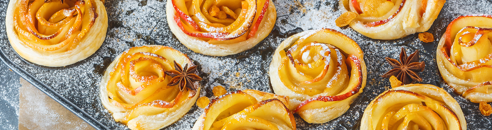

Печиво з листкового тіста для дітей

Щасливе дитинство важко уявити без аромату свіжої домашньої випічки. Якщо колись для випікання смаколиків доводилося годинами стояти на кухні, сучасний темп життя диктує інші правила.
Ідеальне поєднання ніжного тіста, духмяної кориці й хрустких часточок цукру не залишить байдужими юних любителів солоденького. Приготувати це листкове печиво зможе навіть новачок. Випічка особливо смакує з молоком, соком або чаєм.
Успіху Вам і смачних експериментів!
Інгредієнти:
- Листкове тісто ТМ «Шеф-кухар»-500гр
- Цукор-100гр
- Кориця-за смаком
- Вершкове масло «Хуторок селянський» ТМ «Рудь»-30гр
- Цукор пудра-за смаком
Приготування
- Тісто розморожуємо за інструкцією на упаковці.
- Розкачуємо в пласт завтовшки 5 мм, посипаємо корицею та цукром. За допомогою качалки втискаємо корицю і цукор у тісто.
- Загортаємо тісто з обох сторін трубочкою до центру. Нарізаємо шматочками завтовшки 1 см.
- Деко застеляємо пергаментним папером, змащуємо вершковим маслом. Викладаємо шматочки тіста.
- Духовку розігріваємо до температури 190 °C. Ставимо печиво випікатися протягом 15–18 хвилин до золотистого кольору. Коли випічка охолоне, посипаємо цукровою пудрою.
Смачного!
НАЗАД